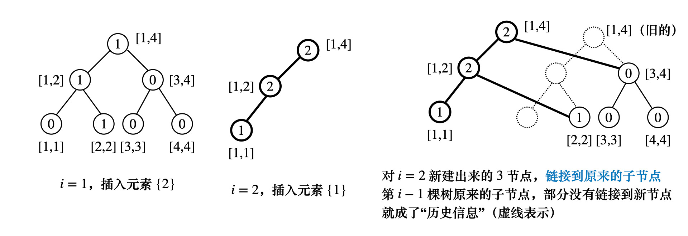

线段树经典模型
Kingdom UVALive4730
1 2 3 4 5 6 7 8 9 10 11 12 13 14 15 16 17 18 19 20 21 22 23 24 25 26 27 28 29 30 31 32 33 34 35 36 37 38 39 40 41 42 43 44 45 46 47 48 49 50 51 52 53 54 55 56 57 58 59 60 61 62 63 64 65 66 67 68 69 70 71 72 73 74 75 76 77 78 79 80 81 82 83 84 85 86 87 88 89 90 91 92 93 94 95 96 97 98 99 100 101 102 103 104 105 106 107 108 109 110 111 112 113 114 115 116 117 118 119 120 121 122 123 124 125 126 127 128 129 130 131 132 133 134 135 136 137 138 139 140 141 142 143 144 145 146 147 148 149 150 151 152 153 154 155 156 157 158 class segTree { public: struct node { int l, r; int sum1, sum2; int tag1, tag2; void apply1(int v) { tag1 += v; sum1 += v * (r-l+1); } void apply2(int v) { tag2 += v; sum2 += v * (r-l+1); } }; inline void push(int p) { if (t[p].l != t[p].r && t[p].tag1) { t[p<<1].apply1(t[p].tag1); t[p<<1 | 1].apply1(t[p].tag1); t[p].tag1 = 0; } if (t[p].l != t[p].r && t[p].tag2) { t[p<<1].apply2(t[p].tag2); t[p<<1 | 1].apply2(t[p].tag2); t[p].tag2 = 0; } } inline void pull(int p) { int lc = p<<1, rc = p<<1 | 1; t[p].sum1 = t[lc].sum1 + t[rc].sum1; t[p].sum2 = t[lc].sum2 + t[rc].sum2; } void change(int p, const int l, const int r, int add1, int add2) { if (l <= t[p].l && t[p].r <= r) { t[p].apply1(add1), t[p].apply2(add2); return ; } push(p); int mid = (t[p].l + t[p].r) >> 1; if (l <= mid) change(p<<1, l, r, add1, add2); if (r > mid) change(p<<1 | 1, l, r, add1, add2); pull(p); } void build(int p, int l, int r) { t[p].l = l, t[p].r = r; if (l >= r) return ; int mid = (l+r) >> 1; if (l <= mid) build(p<<1, l, mid); if (r > mid) build(p<<1 | 1, mid+1, r); } void query(int p, const int C) { if (t[p].l == t[p].r) { printf ("%d %d\n" , t[p].sum1, t[p].sum2); return ; } push(p); int mid = (t[p].l + t[p].r) >> 1; if (C <= mid) query(p<<1, C); else query(p<<1 | 1, C); } int n; vector<node> t; segTree() = default; segTree(int _n) : n(_n) { assert(n > 0); t.resize(n << 2); } void clear() { fill(t.begin(), t.end(), node()); } }; int R, n; const int maxn = 100000 + 10, inf = 0x3f3f3f3f; int cnt[maxn], pa[maxn], ymax[maxn], ymin[maxn]; typedef pair<int, int> PII; PII a[maxn]; segTree seg(maxn); void init() { seg.clear(); for (int i = 0; i < maxn; i++) pa[i] = i; memset(cnt, 0, sizeof cnt); memset(ymax, 0, sizeof ymax); memset(ymin, inf, sizeof ymin); } int get(int x) { return pa[x] == x ? x : pa[x] = get(pa[x]); } void prework(int R) { seg.build(1, 0, R); for (int i = 0; i < n; i++) seg.change(1, a[i].second, a[i].second, 1, 1); } void solve(int R) { int m; scanf("%d", &m); while (m--) { char str[5]; scanf("%s", str); if (str[0] == 'r') { int A, B; scanf("%d%d", &A, &B); A = get(A), B = get(B); if (A == B) continue; seg.change(1, ymin[B], ymax[B], -1, -cnt[B]); seg.change(1, ymin[A], ymax[A], -1, -cnt[A]); pa[B] = A, cnt[A] += cnt[B]; ymin[A] = min(ymin[A], ymin[B]), ymax[A] = max(ymax[A], ymax[B]); seg.change(1, ymin[A], ymax[A], 1, cnt[A]); } else { double _C; scanf("%lf", &_C); int C = _C * 2 ; if (C > R) puts("0 0" ); else seg.query(1, C); } } } int main freopen("input.txt" , "r" , stdin); int T; cin >> T; while (T--) { init(); scanf("%d" , &n); R = 0; for (int i = 0; i < n; i++) { int x, y; scanf("%d%d" , &x, &y); y <<= 1; R = max(R, y); a[i] = {x, y}; ymax[i] = ymin[i] = y; cnt[i] = 1; } prework(R); solve(R); } }
可持久化权值线段树 区间第 k 小 下面来看一种特殊的线段树，即权值线段树k k k A = { a 1 , a 2 , ⋯ , a n } = { − 2 , − 6 , 12 , 3 } A = \{a_1, a_2, \cdots , a_n\} = \{-2, -6, 12, 3\} A = { a 1 , a 2 , ⋯ , a n } = { − 2 , − 6 , 1 2 , 3 }
先将序列离散化成{ 2 ， 1 ， 4 ， 3 } \{2， 1， 4， 3\} { 2 ， 1 ， 4 ， 3 } k k k
for ∀ i ∈ [ 1 , n ] \textbf{for} \ \forall i \in [1, n] for ∀ i ∈ [ 1 , n ] 对每个i i i [ 1 , i ] [1, i] [ 1 , i ] i i i [ 1 , i ] [1, i] [ 1 , i ] k k k O ( log n ) O(\log n) O ( log n ) [ 1 , n ] [1, n] [ 1 , n ] i i i i − 1 i-1 i − 1
对于第i i i j j j ( i < j ) (i < j) ( i < j ) [ l , r ] [l, r] [ l , r ] [ L , R ] [L, R] [ L , R ] t r e e ( R ) − t r e e ( L − 1 ) tree(R) - tree(L-1) t r e e ( R ) − t r e e ( L − 1 ) [ L , R ] [L, R] [ L , R ] t r e e ( P ) = t r e e ( R ) − t r e e ( L − 1 ) tree(P) = tree(R)-tree(L-1) t r e e ( P ) = t r e e ( R ) − t r e e ( L − 1 )
这样就等于在t r e e ( P ) tree(P) t r e e ( P ) k k k
如果t r e e ( P ) . l e f t tree(P).left t r e e ( P ) . l e f t ⩾ K \geqslant K ⩾ K t r e e ( P ) . l e f t tree(P).left t r e e ( P ) . l e f t K K K 否则，令K ′ = K − c n t ( t r e e ( P ) . l e f t ) K' = K-cnt(tree(P).left) K ′ = K − c n t ( t r e e ( P ) . l e f t ) t r e e ( P ) . r i g h t tree(P).right t r e e ( P ) . r i g h t K ′ K' K ′ 对上述线段树进行可持久化 O ( n 2 ) O(n^2) O ( n 2 ) i i i i − 1 i-1 i − 1 只要存储修改路径上的节点 就可以了，如下图所示

重要的细节 r o o t [ ⋯ ] root[\cdots] r o o t [ ⋯ ] i i i
K-th number 第 K 大数
细节，主席树执行单点修改的时候，是基于历史版本p r e pre p r e change ( p r e , l , r , x ) , t [ p r e ] \textbf{change}(pre, l, r, x), \ t[pre] change ( p r e , l , r , x ) , t [ p r e ] p r e pre p r e t [ p r e ] t[pre] t [ p r e ] [ l , r ] [l, r] [ l , r ] m i d ← ( l + r ) / 2 mid \leftarrow (l+r)/2 m i d ← ( l + r ) / 2
t [ t p r e . l ] t[t_{pre}.l] t [ t p r e . l ] [ l , m i d ] [l, mid] [ l , m i d ] t [ t p r e . r ] t[t_{pre}.r] t [ t p r e . r ] [ m i d + 1 , r ] [mid+1, r] [ m i d + 1 , r ] 主席树执行单点修改
新建一个第i i i 新根节点t [ i ] t[i] t [ i ] ，基于旧版本p r e pre p r e 根节点 ，对第i i i 新根节点 进行修改t [ p r e ] → update : f ( P ) t [ i ] t[pre] \xrightarrow{\text{update}: \ f(P)} t[i] t [ p r e ] update : f ( P ) t [ i ] f ( P ) f(P) f ( P ) 自顶向下 递归历史版本的线段树，递归对t p r e t_{pre} t p r e 子树 进行修改如果x ⩽ m i d x \leqslant mid x ⩽ m i d t [ t p r e . l ] t[t_{pre}.l] t [ t p r e . l ] [ l , m i d ] [l, mid] [ l , m i d ] f ( P ) f(P) f ( P ) u u u u u u t [ i ] . l = u t[i].l = u t [ i ] . l = u 如果x > m i d x > mid x > m i d t [ t p r e . r ] t[t_{pre}.r] t [ t p r e . r ] [ m i d + 1 , r ] [mid+1, r] [ m i d + 1 , r ] u u u t [ i ] . r = u t[i].r = u t [ i ] . r = u 主席树查询区间[ u , v ] [u, v] [ u , v ] k k k u ← u − 1 , v ← v u \leftarrow u-1, v \leftarrow v u ← u − 1 , v ← v t [ u ] t[u] t [ u ] t [ v ] t[v] t [ v ]
注意到版本u u u t [ u ] t[u] t [ u ] v v v t [ v ] t[v] t [ v ] [ 1 ⋯ n ] [1\cdots n] [ 1 ⋯ n ] t [ u ] t[u] t [ u ] [ 1 ⋯ u ] ∪ [ u + 1 ⋯ n ] [1\cdots u] \cup [u+1 \cdots n] [ 1 ⋯ u ] ∪ [ u + 1 ⋯ n ] [ 1 ⋯ u ] [1\cdots u] [ 1 ⋯ u ] [ u ⋯ n ] [u \cdots n] [ u ⋯ n ] 0 0 0 所以t [ u ] t[u] t [ u ] [ 1 ⋯ u ] [1\cdots u] [ 1 ⋯ u ] [ l , r ] = [ 1 , n ] [l, r] = [1, n] [ l , r ] = [ 1 , n ] [ u + 1 , n ] [u+1, n] [ u + 1 , n ] 0 0 0 u u u u u u 同理，t [ v ] t[v] t [ v ] [ 1 ⋯ v ] [1\cdots v] [ 1 ⋯ v ] x = t [ v ] − t [ u ] x = t[v] - t[u] x = t [ v ] − t [ u ] [ u + 1 , v ] [u+1, v] [ u + 1 , v ] x x x [ 1 , n ] [1, n] [ 1 , n ] v v v [ v + 1 , n ] [v+1, n] [ v + 1 , n ] 0 0 0 x = t v . s u m − t u . s u m x = t_v.sum - t_u.sum x = t v . s u m − t u . s u m [ u + 1 , v ] [u+1, v] [ u + 1 , v ] x x x k k k 同时递归这两棵线段树 [ l , r ] = [ 1 , n ] , m i d = ( l + r ) / 2 [l, r]=[1,n], \ mid = (l+r)/2 [ l , r ] = [ 1 , n ] , m i d = ( l + r ) / 2 根节点的地址为 u = r o o t ( u − 1 ) , v = r o o t ( v ) q u e r y ( u , v , l , r , K ) : u = root(u-1), v = root(v)\quad query(u, v, l, r, K): u = r o o t ( u − 1 ) , v = r o o t ( v ) q u e r y ( u , v , l , r , K ) : u − 1 u-1 u − 1 u u u [ u , v ] [u, v] [ u , v ] t [ t u . l ] , t [ t v . l ] t[t_u.l], \ t[t_v.l] t [ t u . l ] , t [ t v . l ] [ l , m i d ] [l, mid] [ l , m i d ] c n t = t [ t v . l ] . s u m − t [ t u . l ] . s u m cnt = t[t_v.l].sum - t[t_u.l].sum c n t = t [ t v . l ] . s u m − t [ t u . l ] . s u m K ⩽ c n t K \leqslant cnt K ⩽ c n t q u e r y ( t u . l , t v . l , l , m i d , K ) query(t_u.l, \ t_v.l, \ l, mid, K) q u e r y ( t u . l , t v . l , l , m i d , K ) t [ t u . r ] , t [ t v . r ] t[t_u.r], t[t_v.r] t [ t u . r ] , t [ t v . r ] [ m i d + 1 , r ] [mid+1, r] [ m i d + 1 , r ] K > c n t K > cnt K > c n t K − c n t K - cnt K − c n t q u e r y ( t u . r , t v . r , m i d + 1 , r , K − c n t ) query(t_u.r,\ t_v.r, \ mid+1, r, K-cnt) q u e r y ( t u . r , t v . r , m i d + 1 , r , K − c n t ) 1 2 3 4 5 6 7 8 9 10 11 12 13 14 15 16 17 18 19 20 21 22 23 24 25 26 27 28 29 30 31 32 33 34 35 36 37 38 39 40 41 42 43 44 45 46 47 48 49 50 51 52 53 54 55 56 57 58 59 60 61 62 63 64 65 66 67 68 69 70 71 72 73 74 75 76 77 78 79 80 class wsegTree { public: struct node { int l, r; int sum; }; int n; int tot; vector<node> t; wsegTree() = default; wsegTree(int _n) : n(_n) { assert(n > 0); tot = 0; t.resize(n << 5); } void clear() { tot = 0; fill(t.begin(), t.end(), node()); } int build(int l, int r) { int u = ++tot; if (l >= r) return u; int mid = (l + r) >> 1; t[u].l = build(l, mid); t[u].r = build(mid+1, r); return u; } int change(int pre, int l, int r, int x) { int u = ++tot; t[u] = t[pre]; t[u].sum = t[pre].sum + 1; if (l >= r) return u; int mid = (l + r) >> 1; if (x <= mid) t[u].l = change(t[pre].l, l, mid, x); else t[u].r = change(t[pre].r, mid + 1, r, x); return u; } int query(int u, int v, int l, int r, int K) { if (l == r) return l; int cnt = t[t[v].l].sum - t[t[u].l].sum; int mid = (l + r) >> 1; if (K <= cnt) return query(t[u].l, t[v].l, l, mid, K); else return query(t[u].r, t[v].r, mid+1, r, K-cnt); } }; const int maxn = 100000 + 10; wsegTree wseg(maxn); int n, m, root[maxn], a[maxn], b[maxn]; int main() { freopen("input.txt", "r", stdin); scanf("%d%d", &n, &m); map<int, int> M; int idx = 0; for (int i = 1; i <= n; i++) scanf("%d", &a[i]), M[a[i]] = 0; for (auto &x : M) { x.second = ++idx, b[idx] = x.first; } for (int i = 1; i <= n; i++) { root[i] = wseg.change(root[i-1], 1, idx, M[a[i]]); } while (m--) { int u, v, k; scanf("%d%d%d", &u, &v, &k); int res = wseg.query(root[u-1], root[v], 1, idx, k); printf("%d\n", b[res]); } }
区间内小于等于 k 的数有多少 HDU4417 Super Mario
1 2 3 4 5 6 7 8 9 10 11 12 13 14 15 16 17 18 19 20 21 22 23 24 25 26 27 28 29 30 31 32 33 34 35 36 37 38 39 40 41 42 43 44 45 46 47 48 49 50 51 52 53 54 55 56 57 58 59 60 61 62 63 64 65 66 67 68 69 70 71 72 73 74 75 76 77 78 79 80 81 82 83 84 85 86 87 88 89 90 91 92 93 94 class wsegTree { public: struct node { int l, r; int sum; }; int n; int tot; vector<node> t; wsegTree() = default; wsegTree(int _n) : n(_n) { assert(n > 0); tot = 0; t.resize(n * 20); } void clear tot = 0; fill(t.begin(), t.end(), node()); } int build(int l, int r) { int u = ++tot; if (l >= r) return u; int mid = (l + r) >> 1; t[u].l = build(l, mid); t[u].r = build(mid+1, r); return u; } int change(int pre, int l, int r, int x, int v) { // find [l, r] = [x, x] int u = ++tot; t[u] = t[pre]; t[u].sum = t[pre].sum + v; if (l >= r) return u; int mid = (l + r) >> 1; if (x <= mid) t[u].l = change(t[pre].l, l, mid, x, v); else t[u].r = change(t[pre].r, mid+1, r, x, v); return u; } int query(int i, int j, int l, int r, int k) { if (l >= r) return t[j].sum - t[i].sum; int res = 0, mid = (l + r) >> 1; if (k <= mid) res = query(t[i].l, t[j].l, l, mid, k); else { res += t[t[j].l].sum - t[t[i].l].sum; res += query(t[i].r, t[j].r, mid + 1, r, k); } return res; } }; const int maxn = 100000 + 5; wsegTree wseg(maxn); int a[maxn], b[maxn], n, m, root[maxn]; int main freopen("input.txt" , "r" , stdin); int T; cin >> T; int kase = 0; while (T--) { printf ("Case %d:\n" , ++kase); wseg.clear(); memset(root, 0, sizeof root); scanf("%d%d" , &n, &m); map<int, int> M; for (int i = 1; i <= n; i++) scanf("%d" , &a[i]), M[a[i]] = 0; int idx = 0; for (auto &x : M) { x.second = ++idx, b[idx] = x.first; } // build weight segment tree for (int i = 1; i <= n; i++) root[i] = wseg.change(root[i-1], 1, idx, M[a[i]], 1); // then solve while (m--) { int u, v, h; scanf("%d%d%d" , &u, &v, &h); u++, v++; int k = upper_bound(b+1, b+1+idx, h) - b; k--; if (k == 0) { puts("0" ); continue ; } int res = wseg.query(root[u-1], root[v], 1, idx, k); printf ("%d\n" , res); } } }
统计区间有多少不同数字 Sequence 2 HDU5919
给定序列{ a 1 , a 2 , ⋯ , a n } \{a_1, a_2, \cdots , a_n\} { a 1 , a 2 , ⋯ , a n }
询问区间[ L , R ] [L, R] [ L , R ] k k k ⌈ k 2 ⌉ \lceil \frac{k}{2} \rceil ⌈ 2 k ⌉ a i a_i a i r o o t ( i ) root(i) r o o t ( i ) [ 1 ⋯ i ] [1\cdots i] [ 1 ⋯ i ] 主席数叶子节点分别为[ 1 , 1 ] , [ 2 , 2 ] , ⋯ , [ n , n ] [1, 1], [2, 2], \cdots, [n, n] [ 1 , 1 ] , [ 2 , 2 ] , ⋯ , [ n , n ] 问题是，要求每个数只能出现一次，不能重复计数 ，并且每个数只记录第一次出现的位置 从n → 1 n \to 1 n → 1 map \textbf{map} map 出现的位置 i i i map [ a i ] > 0 \textbf{map}[a_i] > 0 map [ a i ] > 0 map [ a i ] = 0 \textbf{map}[a_i] = 0 map [ a i ] = 0 r o o t ( i ) ← change ( r o o t ( i + 1 ) , i , 1 ) root(i) \leftarrow \textbf{change}(root(i+1), i, 1) r o o t ( i ) ← change ( r o o t ( i + 1 ) , i , 1 ) map [ a i ] = i \textbf{map}[a_i] = i map [ a i ] = i i i i + 1 +1 + 1 还有一个问题，题中要求维护第一次出现的位置，这其实也很好解决i i i j = map [ a i ] > 0 j = \textbf{map}[a_i] > 0 j = map [ a i ] > 0 r o o t ( i ) root(i) r o o t ( i ) j j j − 1 -1 − 1 r o o t ( i ) ← change ( r o o t ( i + 1 ) , i , 1 ) root(i) \leftarrow \textbf{change}(root(i+1), i, 1) r o o t ( i ) ← change ( r o o t ( i + 1 ) , i , 1 ) r o o t ( i ) ← change ( r o o t ( i ) , j , − 1 ) root(i) \leftarrow \textbf{change}(root(i), j, -1) r o o t ( i ) ← change ( r o o t ( i ) , j , − 1 ) map [ a i ] ← i \textbf{map}[a_i] \leftarrow i map [ a i ] ← i 对于每个询问，查询[ L , R ] [L, R] [ L , R ] r o o t ( L ) root(L) r o o t ( L ) [ 1 ⋯ L − 1 ] [1\cdots L-1] [ 1 ⋯ L − 1 ] [ L , n ] [L, n] [ L , n ] r o o t ( L ) root(L) r o o t ( L ) [ 1 , n ] = [ L , n ] [1, n] = [L, n] [ 1 , n ] = [ L , n ] r o o t ( L ) root(L) r o o t ( L ) 标准的线段树查询区间和 ，找到表示[ L , R ] [L, R] [ L , R ] K = s u m K=sum K = s u m 如何求第⌈ K / 2 ⌉ \lceil K/2 \rceil ⌈ K / 2 ⌉ r o o t ( L ) root(L) r o o t ( L ) query ( r o o t ( L ) , 1 , n , ⌈ K / 2 ⌉ ) \textbf{query}(root(L), 1, n, \lceil K/2 \rceil) query ( r o o t ( L ) , 1 , n , ⌈ K / 2 ⌉ ) ⩾ K \geqslant K ⩾ K K − c n t K-cnt K − c n t 细节，这里对主席树r o o t ( L ) root(L) r o o t ( L ) [ 1 , n ] = [ L , n ] [1, n] = [L, n] [ 1 , n ] = [ L , n ] [ L , R ] ⊆ [ L , n ] [L, R] \subseteq [L, n] [ L , R ] ⊆ [ L , n ] [ L , R ] [L, R] [ L , R ] K K K ⌈ K / 2 ⌉ \lceil K/2 \rceil ⌈ K / 2 ⌉ [ R + 1 ⋯ n ] [R+1\cdots n] [ R + 1 ⋯ n ] 另外，本例不需要对序列进行离散化，什么时候需要什么时候不需要呢？
对于区间第K K K A i A_i A i C [ A i ] + = 1 C[A_i] += 1 C [ A i ] + = 1 i i i [ l , r ] = [ A i , A i ] [l, r] = [A_i, A_i] [ l , r ] = [ A i , A i ] + 1 +1 + 1 A i A_i A i A [ 1 ⋯ i ] A[1\cdots i] A [ 1 ⋯ i ] 1 1 1 目的是询问部分和：其中 A i < A j , ∑ ( C [ A i , A i ] → C [ A j , A j ] ) A_i < A_j, \ \sum (C[A_i, A_i] \to C[A_j, A_j]) A i < A j , ∑ ( C [ A i , A i ] → C [ A j , A j ] ) 恰好等于 K K K j j j [ A i , A i ] [A_i, A_i] [ A i , A i ] 本例呢？本例统计的是有多少个数 i i i A i A_i A i 第一次出现 （之前的位置j < i , A i j < i, A_i j < i , A i i i i 这个位置对答案贡献了 1 1 1 [ l , r ] = [ i , i ] [l, r] = [i, i] [ l , r ] = [ i , i ] + 1 +1 + 1 [ i , i ] [i, i] [ i , i ] 1 2 3 4 5 6 7 8 9 10 11 12 13 14 15 16 17 18 19 20 21 22 23 24 25 26 27 28 29 30 31 32 33 34 35 36 37 38 39 40 41 42 43 44 45 46 47 48 49 50 51 52 53 54 55 56 57 58 59 60 61 62 63 64 65 66 67 68 69 70 71 72 73 74 75 76 77 78 79 80 81 82 83 84 85 86 87 88 89 90 91 92 93 94 95 96 97 const int maxn = 200000 + 10; int a[maxn], n, m, root[maxn]; class wsegTree { public: struct node { int l, r; int sum; }; int n; int tot; vector<node> t; wsegTree() = default; wsegTree(int _n) : n(_n) { assert(n > 0); tot = 0; t.resize(n * 36); } void clear tot = 0; fill(t.begin(), t.end(), node()); } int change(int pre, int l, int r, int x, int v) { int u = ++tot; t[u] = t[pre]; t[u].sum = t[pre].sum + v; if (l >= r) return u; int mid = (l + r) >> 1; if (x <= mid) t[u].l = change(t[pre].l, l, mid, x, v); else t[u].r = change(t[pre].r, mid+1, r, x, v); return u; } int query(int u, int l, int r, const int li, const int ri) { if (li <= l && r <= ri) return t[u].sum; int mid = (l + r) >> 1; int ans = 0; if (li <= mid) ans += query(t[u].l, l, mid, li, ri); if (ri > mid) ans += query(t[u].r, mid+1, r, li, ri); return ans; } int query(int u, int l, int r, int k) { if (l >= r) return l; int mid = (l + r) >> 1; int cnt = t[t[u].l].sum; if (cnt >= k) return query(t[u].l, l, mid, k); else return query(t[u].r, mid+1, r, k-cnt); } }; wsegTree wseg(maxn); int main freopen("input.txt" , "r" , stdin); int T; scanf("%d" , &T); int kase = 0; while (T--) { printf ("Case #%d:" , ++kase); // init memset(root, 0, sizeof root); wseg.clear(); scanf("%d%d" , &n, &m); for (int i = 1; i <= n; i++) scanf("%d" , &a[i]); // build seg tree map<int, int> M; for (int i = n; i >= 1; i--) { root[i] = wseg.change(root[i+1], 1, n, i, 1); if (M[a[i]]) root[i] = wseg.change(root[i], 1, n, M[a[i]], -1); M[a[i]] = i; } // query vector<int> ans(maxn, 0); for (int i = 1; i <= m; i++) { int l, r, li, ri; scanf("%d%d" , &l, &r); li = min((l + ans[i-1]) % n + 1 , (r + ans[i-1]) % n + 1); ri = max((l + ans[i-1]) % n + 1 , (r + ans[i-1]) % n + 1); if (li > ri) swap(li, ri); int k = wseg.query(root[li], 1, n, li, ri); k = (k+1) / 2; ans[i] = wseg.query(root[li], 1, n, k); } for (int i = 1; i <= m; i++) printf (" %d" , ans[i]); puts("" ); } }
延迟标记永久化 普通线段树，对于change ( L , R , d ) \textbf{change}(L, R, d) change ( L , R , d ) [ L , R ] [L, R] [ L , R ] d d d [ L , R ] [L, R] [ L , R ] u u u u u u d a t dat d a t 区间已经修改，但延迟标记尚未下传 询问子区间 [ l , r ] ⊂ [ L , R ] [l, r] \subset [L, R] [ l , r ] ⊂ [ L , R ] push ( u ) \textbf{push}(u) push ( u ) push \textbf{push} push 将延迟标记作用于经过的子节点 ，即a p p l y ( u ) u ∈ child path apply(u) \quad u \in \text{child path} a p p l y ( u ) u ∈ child path 递归访问子节点的时候 ，路径上经过的区间都会得到修改，直到问询区间[ l , r ] [l, r] [ l , r ] 权值线段树，可以考虑将lazy \text{lazy} lazy change \textbf{change} change 是自顶向下修改 change ( L , R , d ) \textbf{change}(L, R, d) change ( L , R , d ) [ 1 , n ] → ⋯ → [ L , R ] [1, n] \to \cdots \to [L, R] [ 1 , n ] → ⋯ → [ L , R ] 所有点表示的区间都会改变 边递归边修改 ，对于路径[ 1 , n ] → ⋯ → [ L , R ] [1, n] \to \cdots \to [L, R] [ 1 , n ] → ⋯ → [ L , R ] 所有点 u u u u . dat + = d ⋅ ( min ( u r , R ) − max ( u l , L ) + 1 ) u.\text{dat} += d \cdot (\min(u_r, R)-\max(u_l, L) + 1) u . dat + = d ⋅ ( min ( u r , R ) − max ( u l , L ) + 1 ) 只要在递归终点，要修改的区间 [ L , R ] [L, R] [ L , R ] lazy \text{lazy} lazy [ 1 , n ] → [ L , R ] [1, n] \to [L, R] [ 1 , n ] → [ L , R ] [ L , R ] [L, R] [ L , R ] [ L , R ] [L, R] [ L , R ] 如果[ L , R ] [L, R] [ L , R ] lazy \text{lazy} lazy 子区间 [ l i , r i ] ⊂ [ L , R ] [li, ri] \subset [L, R] [ l i , r i ] ⊂ [ L , R ] a d d add a d d query ( u , l i , r i , a d d ) \textbf{query}(u, li, ri, add) query ( u , l i , r i , a d d ) 初始调用 的时候a d d = 0 , query ( u , 1 , n , 0 ) add = 0, \textbf{query}(u, 1, n, 0) a d d = 0 , query ( u , 1 , n , 0 ) 如果l i ⩽ u l ⩽ u r ⩽ r i li \leqslant u_l \leqslant u_r \leqslant ri l i ⩽ u l ⩽ u r ⩽ r i u u u r e s ← u . dat + a d d ⋅ ( u r − u l + 1 ) res \leftarrow u.\text{dat} + add \cdot (u_r - u_l + 1) r e s ← u . dat + a d d ⋅ ( u r − u l + 1 ) 否则的话，需要递归求解u u u 令 a d d ← a d d + u . lazy add \leftarrow add + u.\text{lazy} a d d ← a d d + u . lazy r e s + = query ( t [ u ] . l , l i , r i , a d d + u . lazy ) res += \textbf{query}(t[u].l, \ li, ri, add + u.\text{lazy}) r e s + = query ( t [ u ] . l , l i , r i , a d d + u . lazy ) HDU4348 To The Moon
在时间t = 0 t = 0 t = 0 r o o t ( 0 ) = b u i l d ( 1 , n ) root(0) = build(1, n) r o o t ( 0 ) = b u i l d ( 1 , n ) a i a_i a i 接下来根据时间t t t ( C L R d ) (C \ L \ R \ d) ( C L R d ) r o o t t = change ( r o o t t − 1 , l , r , d ) root_t = \textbf{change}(root_{t-1}, l, r, d) r o o t t = change ( r o o t t − 1 , l , r , d ) 对于询问( Q L R ) (Q \ L \ R) ( Q L R ) r o o t ( t ) root(t) r o o t ( t ) r o o t ( t ′ ) root(t') r o o t ( t ′ ) ( B t ) (B \ t) ( B t ) t t t t o t ← r o o t ( t + 1 ) tot \leftarrow root(t+1) t o t ← r o o t ( t + 1 ) t t t t cur ← t t_{\text{cur}} \leftarrow t t cur ← t 1 2 3 4 5 6 7 8 9 10 11 12 13 14 15 16 17 18 19 20 21 22 23 24 25 26 27 28 29 30 31 32 33 34 35 36 37 38 39 40 41 42 43 44 45 46 47 48 49 50 51 52 53 54 55 56 57 58 59 60 61 62 63 64 65 66 67 68 69 70 71 72 73 74 75 76 77 78 79 80 81 82 83 84 85 86 87 88 89 90 91 92 93 94 95 96 97 98 99 100 101 102 103 104 105 106 107 108 109 110 111 112 113 114 115 const int maxn = 1e5 + 10; int n, m, root[maxn]; ll a[maxn]; class wsegTree { public: struct node { int l, r; ll lazy, sum; }; int n; int tot; vector<node> t; wsegTree() = default; wsegTree(int _n) : n(_n) { assert(n > 0); tot = 0; t.resize(n * 25); } void clear tot = 0; fill(t.begin(), t.end(), node()); } int build(int l, int r) { int u = ++tot; if (l >= r) { t[u].sum = a[l]; return u; } int mid = (l + r) >> 1; t[u].l = build(l, mid); t[u].r = build(mid+1, r); t[u].sum = t[t[u].l].sum + t[t[u].r].sum; return u; } int change(int pre, int l, int r, const int li, const int ri, ll v) { int u = ++tot; t[u] = t[pre]; t[u].sum += v * (min(r, ri) - max(l, li) + 1); if (li <= l && r <= ri) { t[u].lazy += v; return u; } int mid = (l + r) >> 1; if (li <= mid) t[u].l = change(t[pre].l, l, mid, li, ri, v); if (ri > mid) t[u].r = change(t[pre].r, mid+1, r, li, ri, v); return u; } ll query(int u, int l, int r, const int li, const int ri, ll add) { if (li <= l && r <= ri) { ll res = t[u].sum + add * (r-l+1); return res; } add += t[u].lazy; int mid = (l + r) >> 1; ll res = 0; if (li <= mid) res += query(t[u].l, l, mid, li, ri, add); if (ri > mid) res += query(t[u].r, mid+1, r, li, ri, add); return res; } }; wsegTree wseg(maxn); int main freopen("input.txt" , "r" , stdin); while (~scanf("%d%d" , &n, &m)) { // init wseg.clear(); memset(root, 0, sizeof root); for (int i = 1; i <= n; i++) scanf("%lld" , &a[i]); // build root[0] = wseg.build(1, n); // m queries int t = 0; while (m--) { char str[2]; scanf("%s" , str); if (str[0] == 'Q' ) { int li, ri; scanf("%d%d" , &li, &ri); //debug(li); ll res = wseg.query(root[t], 1, n, li, ri, 0); printf ("%lld\n" , res); } if (str[0] == 'C' ) { t++; int li, ri; ll d; scanf("%d%d%lld" , &li, &ri, &d); root[t] = wseg.change(root[t-1], 1, n, li, ri, d); } if (str[0] == 'H' ) { int li, ri, ti; scanf("%d%d%d" , &li, &ri, &ti); ll res = wseg.query(root[ti], 1, n, li, ri, 0); printf ("%lld\n" , res); } if (str[0] == 'B' ) { int ti; scanf("%d" , &ti); t = ti; } } } }
主席树树上查询 树上查询常见的问题，给你树上任意两个节点u , v u, v u , v u → v u \to v u → v k k k Count On a Tree SPOJ-COT
令lca = LCA ( u , v ) , p a = p a ( l c a ) \text{lca} = \text{LCA}(u, v),\ pa = pa(lca) lca = LCA ( u , v ) , p a = p a ( l c a ) f ( u , l i , r i ) f(u, li, ri) f ( u , l i , r i ) root \text{root} root u u u [ l i , r i ] [li, ri] [ l i , r i ] u → v u \to v u → v [ l i , r i ] [li, ri] [ l i , r i ]
f ( v , l i , r i ) + f ( u , l i , r i ) − f ( p a , l i , r i ) − f ( lca , l i , r i ) f(v, li, ri) + f(u, li, ri) - f(pa, li, ri) - f(\text{lca}, li, ri) f ( v , l i , r i ) + f ( u , l i , r i ) − f ( p a , l i , r i ) − f ( lca , l i , r i )
可以考虑使用主席树（函数式线段树）来维护
先对所有的权值进行离散化，编号为u u u M [ a u ] M[a_u] M [ a u ]
设根节点为1 1 1 0 0 0 dfs ( u , p a ) \textbf{dfs}(u, pa) dfs ( u , p a ) dfs ( 1 , 0 ) \textbf{dfs}(1, 0) dfs ( 1 , 0 )
在dfs ( u , p a ) \textbf{dfs}(u, pa) dfs ( u , p a ) root ( u ) ← change ( root ( p a ) , M [ a u ] , 1 ) \text{root}(u) \leftarrow \textbf{change}(\text{root}(pa), M[a_u], 1) root ( u ) ← change ( root ( p a ) , M [ a u ] , 1 )
接下来就是在路径序列中执行 KQuery，对于主席树的某个节点 [ p l , p r ] [p_l, p_r] [ p l , p r ] [ u , v ] [u, v] [ u , v ]
同时递归root ( v ) , root ( u ) , root ( lca ) , root ( p a ) \text{root}(v), \text{root}(u), \text{root}(\text{lca}), \text{root}(pa) root ( v ) , root ( u ) , root ( lca ) , root ( p a ) [ p l , p r ] [p_l, p_r] [ p l , p r ] t [ u ] , t [ v ] , t [ lca ] , t [ p a ] t[u], t[v], t[\text{lca}], t[pa] t [ u ] , t [ v ] , t [ lca ] , t [ p a ] cnt ( p ) = t [ v ] . s u m + t [ u ] . s u m − t [ lca ] . s u m − t [ p a ] . s u m \text{cnt}(p) = t[v].sum + t[u].sum - t[\text{lca}].sum - t[pa].sum cnt ( p ) = t [ v ] . s u m + t [ u ] . s u m − t [ lca ] . s u m − t [ p a ] . s u m 然后就是标准的二分查找，如果cnt ( t p . l ) ⩾ K \text{cnt}(t_p.l) \geqslant K cnt ( t p . l ) ⩾ K p p p K − cnt ( t p . l ) K-\text{cnt}(t_p.l) K − cnt ( t p . l ) l = r l = r l = r l l l
1 2 3 4 5 6 7 8 9 10 11 12 13 14 15 16 17 18 19 20 21 22 23 24 25 26 27 28 29 30 31 32 33 34 35 36 37 38 39 40 41 42 43 44 45 46 47 48 49 50 51 52 53 54 55 56 57 58 59 60 61 62 63 64 65 66 67 68 69 70 71 72 73 74 75 76 77 78 79 80 81 82 83 84 85 86 87 88 89 90 91 92 93 94 95 96 97 98 99 100 101 102 103 104 105 106 107 108 109 110 111 112 113 114 115 116 117 118 119 120 121 122 123 124 125 126 127 128 129 130 131 132 class Graph { public: int tot = 1; int n; vector<int> head, ver, ne; Graph() = default; Graph(int _n) : n(_n) { tot = 1; head.resize(n), ver.resize(n<<1), ne.resize(n<<1 ); } void clear tot = 1; fill(head.begin(), head.end(), 0); } void add(int a, int b) { ver[++tot] = b, ne[tot] = head[a], head[a] = tot; } }; const int maxn = 100000 + 10; const int LOG = 31; int idx, m, a[maxn], b[maxn], root[maxn], dep[maxn], f[maxn][LOG+1]; map<int, int> M; Graph G(maxn); int n = 0; class wsegTree { public: struct node { int l, r; int sum; }; int n; int tot; vector<node> t; wsegTree() = default; wsegTree(int _n) : n(_n) { assert(n > 0); tot = 0; t.resize(n << 5); } void clear() { tot = 0; fill(t.begin(), t.end(), node()); } int change(int pre, int l, int r, int x, int v) { int u = ++tot; t[u] = t[pre]; t[u].sum = t[pre].sum + v; if (l >= r) return u; int mid = (l + r) >> 1; if (x <= mid) t[u].l = change(t[pre].l, l, mid, x, v); else t[u].r = change(t[pre].r, mid+1, r, x, v); return u; } int query(int u, int v, int lca, int fa, int l, int r, int k) { if (l >= r) return l; int cnt = t[t[u].l].sum + t[t[v].l].sum - t[t[lca].l].sum - t[t[fa].l].sum; int mid = (l + r) >> 1; if (cnt >= k) return query(t[u].l, t[v].l, t[lca].l, t[fa].l, l, mid, k); else return query(t[u].r, t[v].r, t[lca].r, t[fa].r, mid+1, r, k-cnt); } }; wsegTree wseg(maxn); void dfs(int u, int pa) { f[u][0] = pa, dep[u] = dep[pa] + 1; for (int j = 1; j <= LOG; j++) f[u][j] = f[f[u][j-1]][j-1]; root[u] = wseg.change(root[pa], 1, n, M[a[u]], 1); for (int i = G.head[u]; i; i = G.ne[i]) { int v = G.ver[i]; if (v == pa) continue; dfs(v, u); } } int LCA(int x, int y) { if (dep[x] > dep[y]) swap(x, y); for (int i = LOG; i >= 0; i--) { if (dep[f[y][i]] >= dep[x]) y = f[y][i]; } if (y == x) return y; for (int i = LOG; i >= 0; i--) { if (f[y][i] != f[x][i]) y = f[y][i], x = f[x][i]; } return f[x][0]; } int main() { freopen("input.txt", "r", stdin); memset(root, 0, sizeof root); memset(dep, 0, sizeof dep); memset(f, 0, sizeof f); M.clear(); // get graph scanf("%d%d", &idx, &m); for (int i = 1; i <= idx; i++) scanf("%d", &a[i]), M[a[i]] = 0; n = 0; for (auto &u : M) { u.second = ++n, b[n] = u.first; } for (int i = 1; i <= idx-1; i++) { int u, v; scanf("%d%d", &u, &v); G.add(u, v), G.add(v, u); } // dfs dfs(1, 0); // query int res = 0; while (m--) { int u, v, k; scanf("%d%d%d", &u, &v, &k); int lca = LCA(u, v), fa = f[lca][0]; //debug(fa); int res = wseg.query(root[u], root[v], root[lca], root[fa], 1, n, k); printf("%d\n", b[res]); } }


 微信
微信 支付宝
支付宝